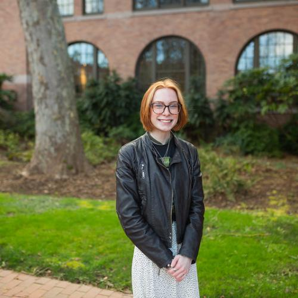

KR
Developer & Designer
Hello, I'm
Kaitlyn Rice
- a Developer and Designer based in Bellingham, WA -

I'm a Computer Science undergraduate minoring in UX Design & Pyschology at Western Washington University in Bellingham, WA who has a passion for innovation and accessibility.
I never thought I was an artistic person until I began using technology as a means of creativity using paint on our family's desktop to create different types of digital art when I was younger. During my 3rd year in university I had the opportunity to be a part of our accessibility research lab where my eyes were opend up to the way in which creativity within technology can assist the lives of others and can increase opportunities.
Outside of developing and designing, I love music, specifically house and techno. Whenever I'm programming I find myself listening to a set on SoundCloud and getting lost in the music and code. Within the last year I began learning how to DJ with hope that one day I'll mix my perfect soundtrack to code to.